Anatomy of the Assigned-Female Pelvis & Perineum & Sexual Function
- The uterus normally sits anteverted and anteflexed, resting on the bladder. The cervix is the least mobile part, held by the cardinal and uterosacral ligaments. The speculum blades sit in the anterior and posterior fornices.
- The uterine artery (from the internal iliac) runs in the cardinal ligament and crosses over the ureter: "water under the bridge". Find the ureter before you clamp in a hysterectomy. The ovarian artery comes straight off the aorta, in the suspensory ligament, because the ovary started out high.
- Pelvic pain line = the lower edge of the peritoneum. Pain from above it (fundus, body, tubes, ovaries) travels with the sympathetics to T11–L2 and is felt in the lower trunk and back. Pain from below it (cervix, upper vagina) travels with the parasympathetics to S2–S4 and is felt in the buttock and back of the leg. The perineum is pudendal nerve (S2–S4).
- The pouch of Douglas (rectouterine pouch) is the lowest point of the peritoneal cavity. Fluid collects there when upright, and you can reach it through the posterior fornix (culdocentesis).
- Two fascial pouches, two injuries. Straddle injury tears the spongy urethra, so urine fills the superficial pouch and tracks up the abdominal wall (never the thighs). Pelvic fracture tears the membranous urethra, so urine fills the deep pouch and can rise into the pelvis. And: internal hemorrhoids bleed but don't hurt; external ones hurt.
- Anatomy of the Pelvis ▶9:22
- Pelvic Anatomy & Supports ▶11:20
- Pelvic Blood Supply ▶11:24
- Pelvis & Perineum Review ▶9:42
- Anal Triangle Anatomy ▶9:25
Learning Objectives
- Identify the uterus, cervix, uterine tubes, ovaries, bladder, vagina and vulva.
- Describe the structures that support and stabilize the uterus and vagina, and the complications when they fail.
- Trace the arterial supply, venous drainage and lymphatic drainage of the pelvis and perineum.
- Describe the nerve supply to the female pelvis and why it makes diagnosis tricky.
- Describe the fascial layers of the perineum and how they decide where fluid collects.
- Compare male and female erectile bodies and external genitalia, and their role in the sexual response.
- Build an approach to a 20-year-old woman with right lower quadrant pain.
Dr. Martin's workshop runs for over three hours: lectures, lab videos and knowledge checks. It builds on the P1 pelvis and perineum. The embryology behind all of this (why the ovary's blood supply comes from the aorta, why the round ligament ends in the labia majora) is the next lecture, 3.7.
A Note on the Words Used
The lecture opens by explaining its language. Sex refers to genes, chromosomes, anatomy and their products. Gender refers to the psychological, social and cultural roles a society calls masculine or feminine. Both come in more than two versions, and they combine into a person's self-identification (pronouns, language, presentation).
| Approach | When to use it | Example |
|---|---|---|
| Person-first language | One-on-one: use the person's own identification | Ask for, and use, their pronouns |
| Avoid binary shortcuts | General speech | "Assigned female at birth" instead of "born female"; "all sexes" instead of "both sexes"; "phenotypic" instead of "normal" development; "they" when you don't know |
| Anatomy-first language | Big general statements, when identity is unknown | "Anyone with a cervix needs screening" instead of "women need screening"; "people with a prostate" instead of "men" |
In this course, "female" and "male" mean the assigned-female-at-birth and assigned-male-at-birth phenotypes. The same distinction comes up again in 3.8.
The Organs
Vagina, uterus and cervix, uterine tubes and ovaries: what each looks like, what it does, and how you examine and image it.
The Layout
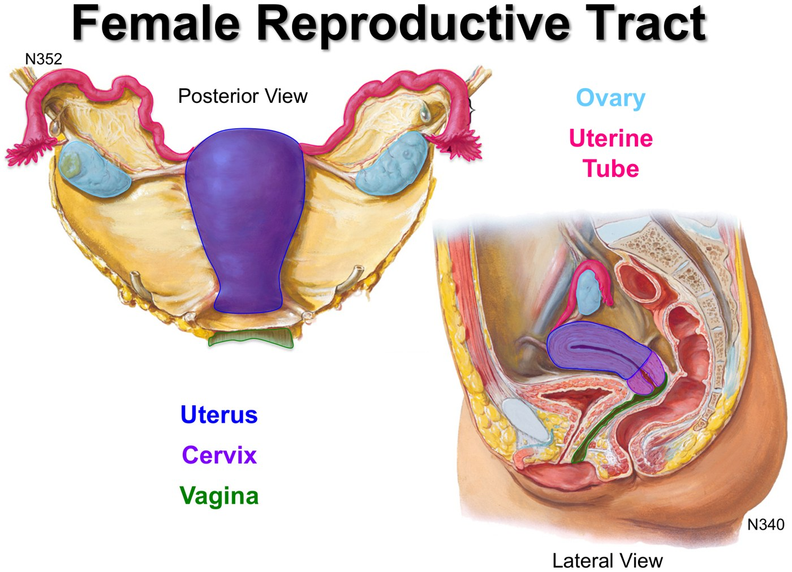
The Vagina
- A musculomembranous tube, 7–9 cm long, from the cervix to the vaginal opening in the vestibule (between the labia minora).
- It lies between the urethra and bladder in front and the rectum behind.
- Three jobs: receives the penis, carries menstrual flow, and is the birth canal.
- The cervix pokes into the top of the vagina, leaving a gutter around it: the fornix. It has an anterior, a posterior (the deepest) and two lateral parts.
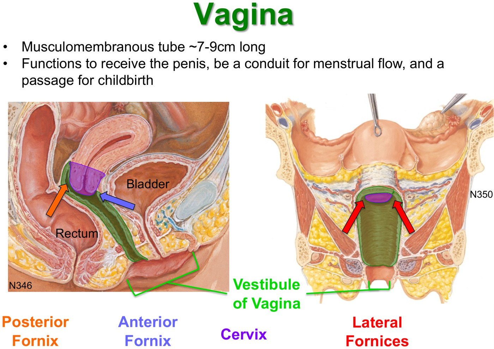
The fornices. Posterior (orange), anterior (blue) and lateral (red), all around the cervix (purple). Keep the posterior fornix in mind: it sits right against the pouch of Douglas.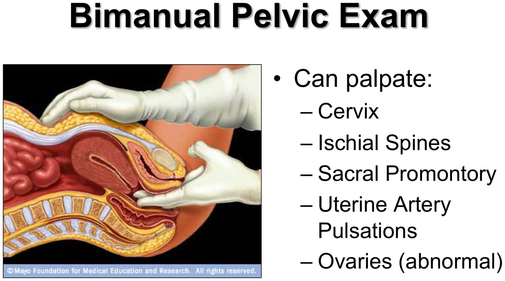
Why the bimanual exam works. The vagina is thin, stretchy and central, so you can feel through it: the cervix, ischial spines, sacral promontory, uterine artery pulsations, and the ovaries only when abnormal (e.g. a cyst).The Uterus and Cervix
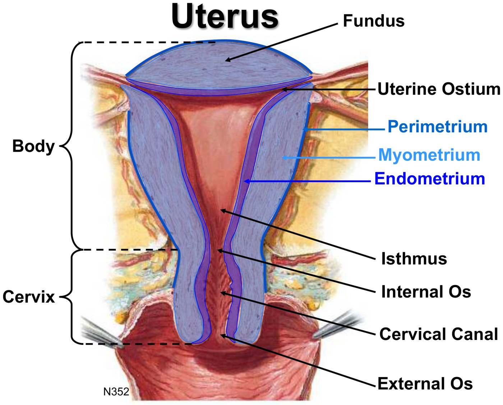
Body (upper 2/3): fundus (the dome above the tubes), uterine ostia, isthmus. Cervix (lower 1/3): internal os → cervical canal → external os. "Os" means opening.| Layer | What it is |
|---|---|
| Endometrium | Inner mucous lining. Shed in menstruation; where the blastocyst implants |
| Myometrium | Thick smooth muscle carrying the vessels and nerves. Hormones make it contract in menses and labour |
| Perimetrium | Outer serous coat |
The histology of each layer across the cycle is in 2.7.
Examining the cervix
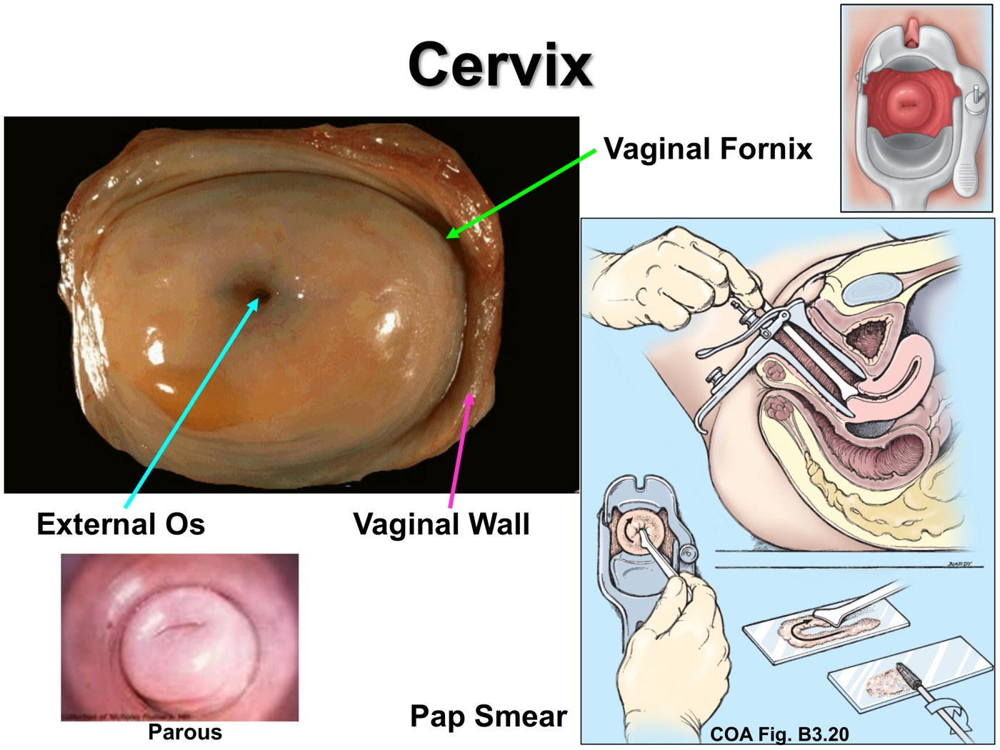
Why it matters: the lecture quotes a lifetime cervical cancer risk of about 1 in 145. Before 1940 it was the leading cause of cancer death in North American women. Deaths fell sharply once the cervix could be looked at and sampled routinely. Screening itself is a later lecture.
Position: anteverted and anteflexed
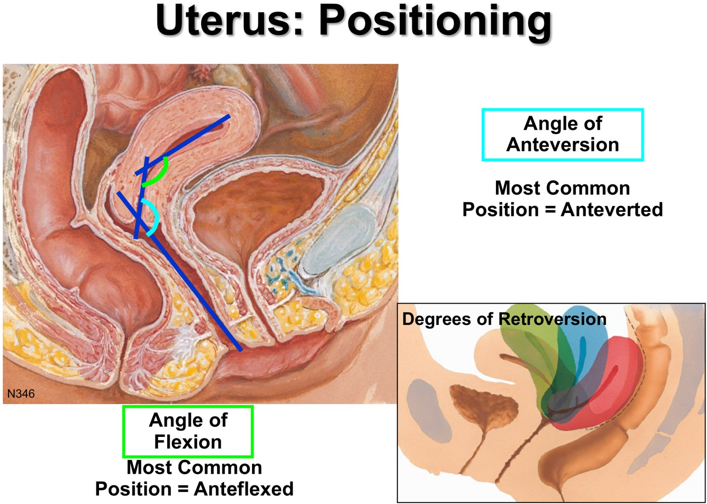
Two angles. Version = vagina vs cervix. Flexion = cervix vs uterine body. Normal is anteverted + anteflexed. The uterus is mobile, so retroverted or retroflexed positions (inset) are common variants.- Anteverted: the cervix tips forward from the vagina.
- Anteflexed: the body bends forward on the cervix.
- Together they put the uterus on top of the bladder. That is why pregnant people need to pee so often.
- The top of the uterus moves around. A very full bladder can push it back toward retroversion.
- The position is also support: when abdominal pressure pushes down, the bladder is underneath (Part 2).
Shape and size across a lifetime
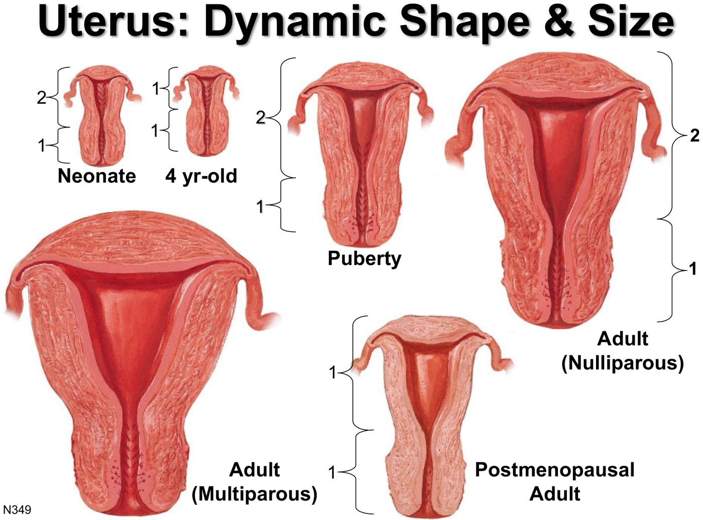
Body : cervix ratio tracks hormones. With estrogen, the body is 2× the cervix. Without it, 1:1.| Stage | Body : cervix | Why |
|---|---|---|
| Newborn | 2 : 1 | Mom's hormones are still circulating |
| Child | 1 : 1 | No hormones |
| Puberty | 2 : 1 | Hormones return; still growing to adult size |
| Adult, nulliparous | 2 : 1 | |
| Adult, multiparous | 3 : 1 | Never shrinks fully back after pregnancy |
| Postmenopause | 1 : 1 | Hormones gone again |
In pregnancy
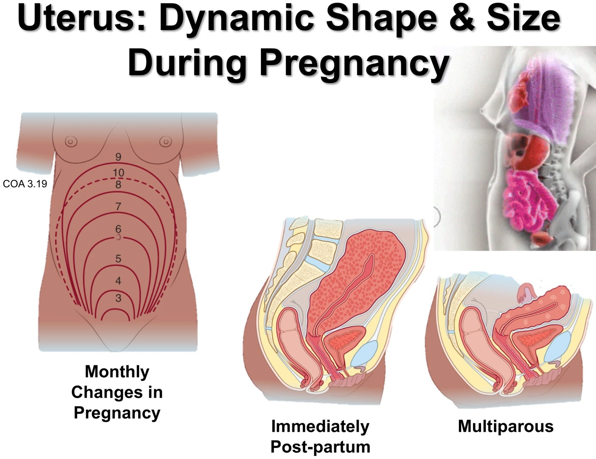
Uterine Tubes and Ovaries (the Adnexa)
Adnexa means "adjacent structures": everything lateral to the uterus.
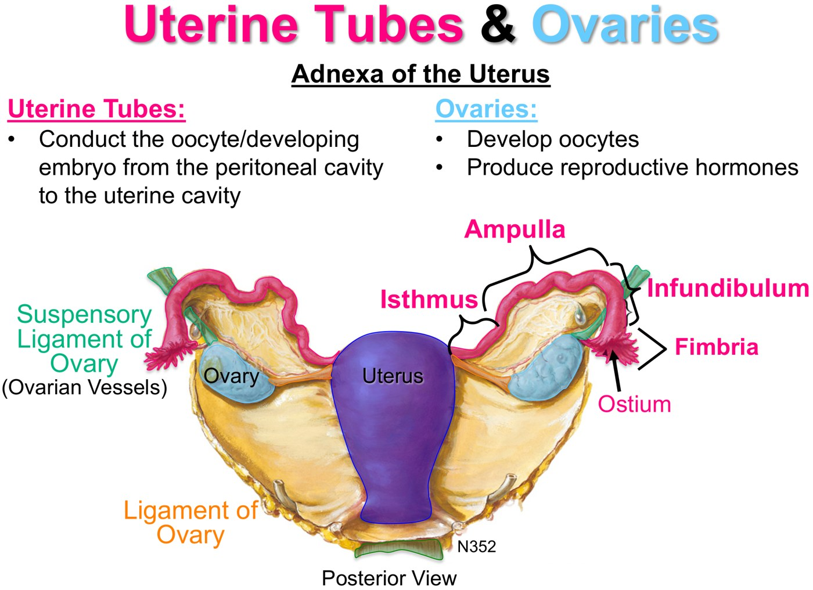
| Organ | Jobs |
|---|---|
| Uterine tube | Catches the oocyte from the peritoneal cavity (the fimbriae sweep it in), is the usual site of fertilization, and carries the embryo to the uterus |
| Ovary | Develops oocytes and releases them into the peritoneal cavity, not straight into the tube; makes the reproductive hormones |
From sperm to implantation
- Sperm survive 3–5 days in the tract, so insemination usually happens before ovulation.
- The ovary releases the oocyte; the fimbriae draw it in.
- Fertilization in the ampulla. The embryo moves medially along the tube.
- Implantation in the endometrium 6–8 days later.
Ectopic pregnancy
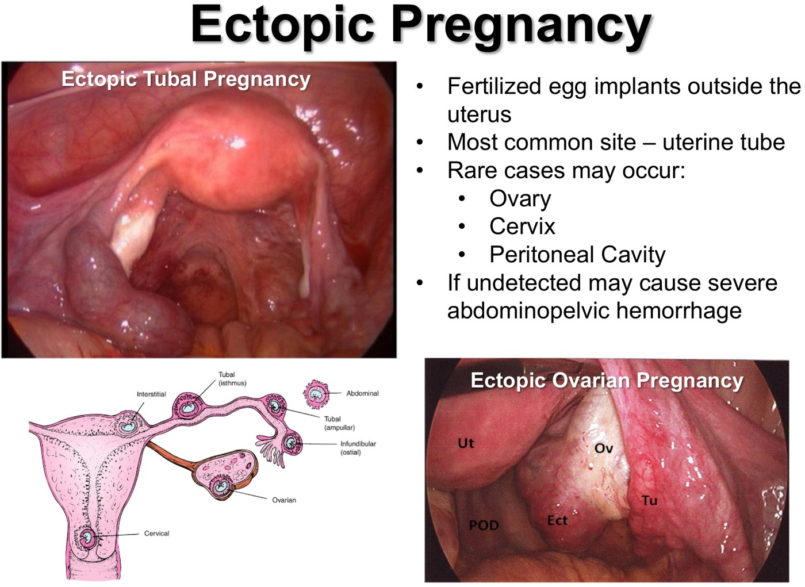
How We Actually See It: Imaging
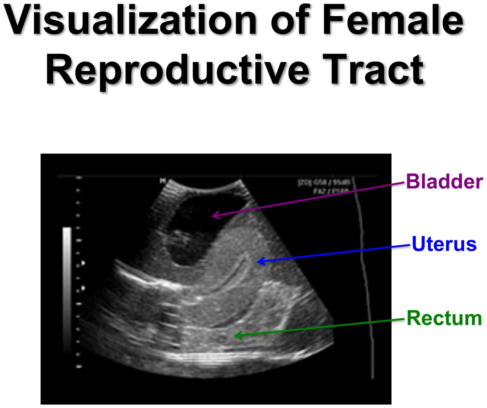
Transabdominal ultrasound, the most common and least invasive. The probe is on the belly, so the top of the image is anterior. It needs a full bladder (black = fluid) as a window. You can see the myometrium, the brighter endometrial lining and the anteverted, anteflexed position.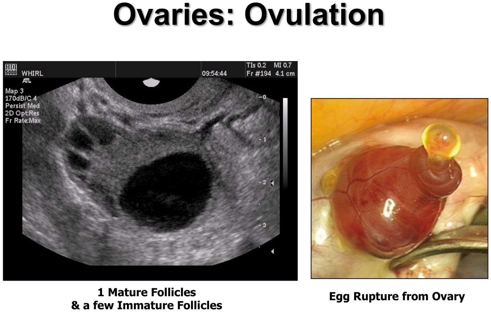
Transvaginal ultrasound puts the probe right next to the ovary. Follicles are black circles. A mature follicle reaches about 20 mm; after the LH surge it ruptures and releases the egg (photo, right).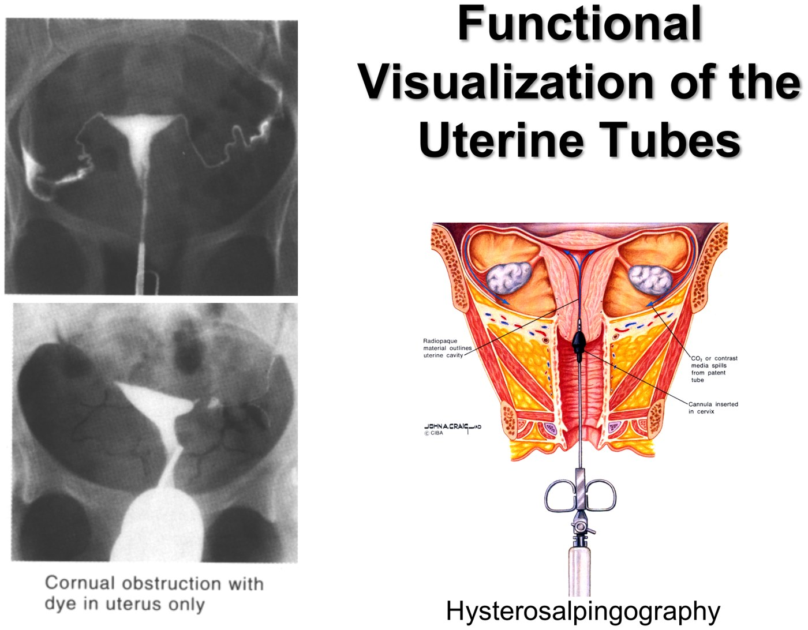
What Holds It All Up
Dynamic support from muscle, passive support from ligaments and position. When these fail, you get incontinence and prolapse.
Supports of the Uterus and Ovaries
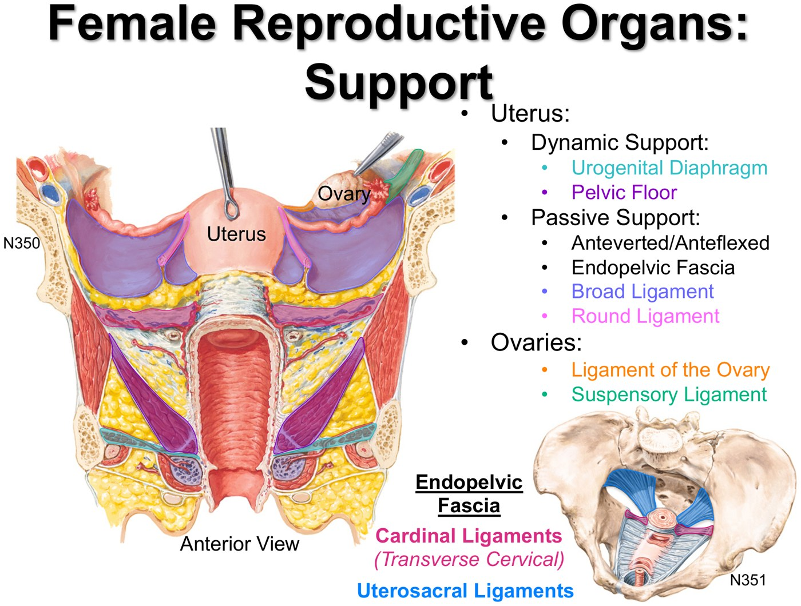
The support list, colour-coded. Dynamic: urogenital diaphragm + pelvic floor. Passive: position, endopelvic fascia (cardinal and uterosacral ligaments), broad ligament, round ligament. Ovary: ligament of the ovary + suspensory ligament.| Type | What |
|---|---|
| Dynamic (muscle) | Pelvic floor and urogenital diaphragm. Both meet at the perineal body |
| Passive | Position: anteverted/anteflexed on the bladder · endopelvic fascia: cardinal and uterosacral ligaments · broad ligament · round ligament |
The cervix is the least mobile part of the whole tract. It is the hub the endopelvic fascia ligaments anchor to.
| Ligament | Runs from → to | Key point |
|---|---|---|
| Cardinal (transverse cervical) | Cervix and vagina → lateral pelvic wall, at the base of the broad ligament | Carries the uterine vessels. Holds the uterus up by the cervix |
| Uterosacral | Cervix → mid-sacrum | Stops the cervix prolapsing into the vagina. Surgical landmark: the ureter runs just lateral to it |
| Broad | A double layer of peritoneum draped over the uterus to the pelvic walls | Three parts: mesometrium (uterus), mesovarium (ovary), mesosalpinx (tube; salpinx = trumpet) |
| Round ligament of the uterus | Uterotubal junction → deep ring → inguinal canal → labia majora | Anchors the uterus forward. Stretches a lot in pregnancy: round ligament pain |
| Ligament of the ovary | Ovary → uterus | With the round ligament, the female remnant of the gubernaculum |
| Suspensory ligament of the ovary | Ovary → lateral pelvic wall | Carries the ovarian vessels (it's a "ligament" because it's covered in peritoneum) |
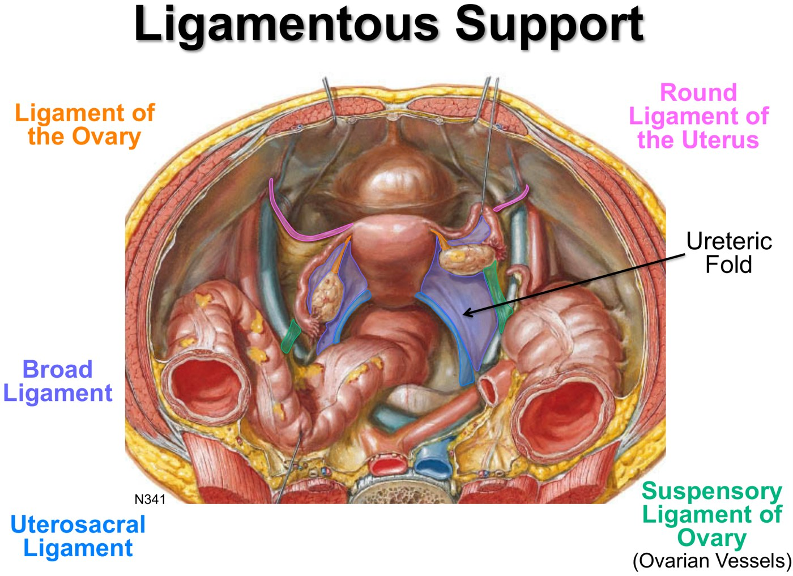
From above, as in the lab. Note the ureteric fold running under the broad ligament beside the uterosacral ligament: that is the ureter you have to protect.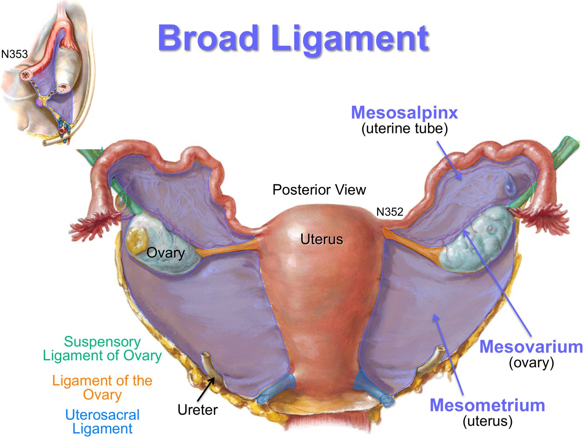
The broad ligament's three parts. Mesosalpinx hangs from the tube, mesovarium sticks out to hold the ovary, mesometrium flanks the uterus. The inset shows the two peritoneal layers in cross-section.In both sexes a cord called the gubernaculum tethers the gonad and pulls it down as the embryo grows. In males it drags the testis through the inguinal canal into the scrotum. In females the middle of the cord gets stuck to the side of the uterus, splitting it into two: the ligament of the ovary (ovary to uterus) and the round ligament, which carries on through the inguinal canal into the labia majora, the female homologue of the scrotum. The full story is in 3.7.
Clinical: these supports are often stretched or damaged in pregnancy and childbirth, which leads to incontinence and pelvic organ prolapse.
Peritoneal Pouches and the Posterior Fornix
The peritoneum drapes down over the bladder, dips between the bladder and the uterus, goes up and over the uterus, dips again behind it, then climbs up over the rectum. The two dips are the pouches.
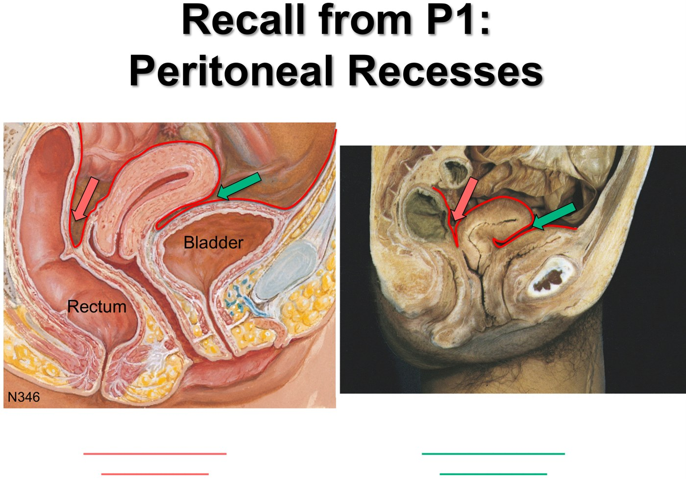
Vesicouterine pouch (green, between bladder and uterus): shallow. Rectouterine pouch / pouch of Douglas (red, between uterus and rectum): the deepest point of the peritoneal cavity. Fluid collects here in someone standing up.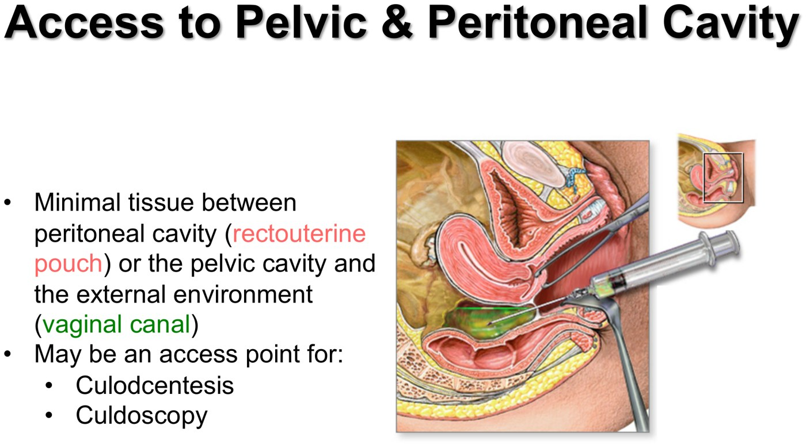
The posterior fornix sits right against the pouch of Douglas. Only a thin wall separates the peritoneal cavity from the vagina, which counts as the outside world. So you can drain fluid (culdocentesis) or pass a camera (culdoscopy) through it.The Pelvic Floor
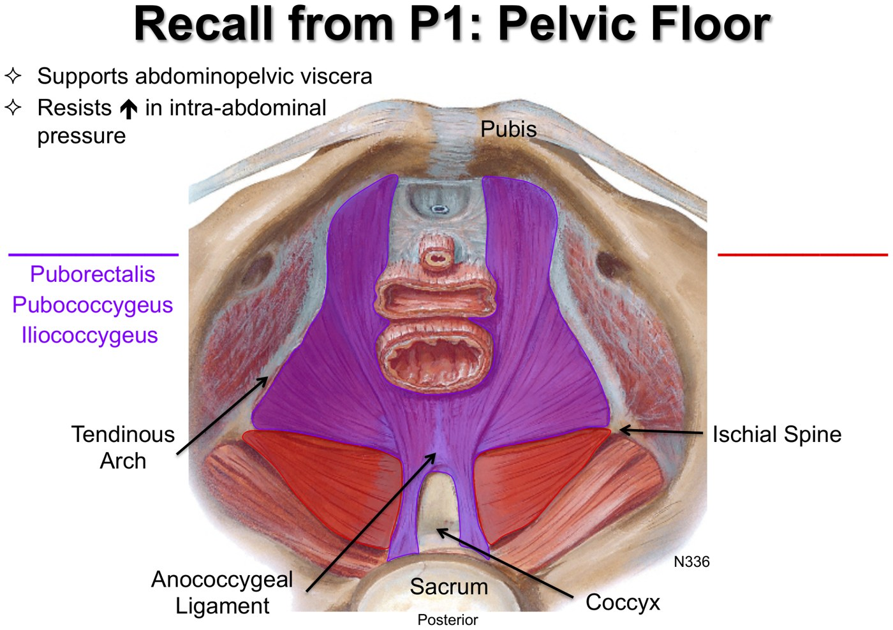
A muscular basket. Levator ani (puborectalis, pubococcygeus, iliococcygeus; purple) does most of it. Coccygeus fills in at the back. It holds the organs up and resists rises in abdominal pressure.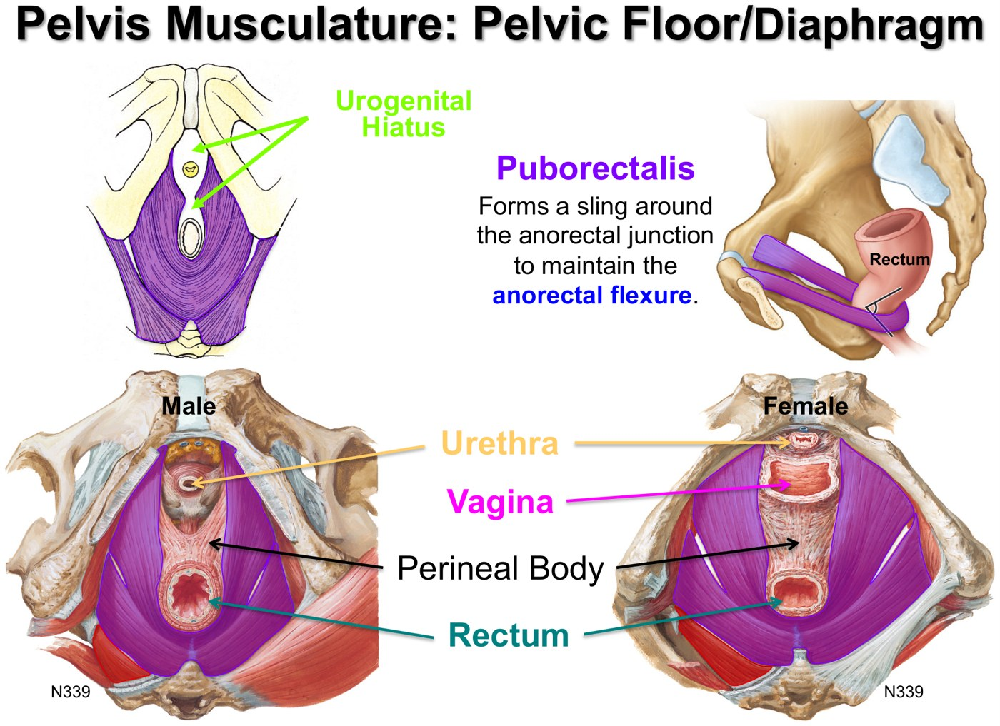
Puborectalis slings around the anorectal junction and keeps it kinked (the anorectal flexure). Rectum means straight, and a straight rectum would not hold. The openings: urethra, vagina (females only), rectum.| Muscle | From | To |
|---|---|---|
| Levator ani (puborectalis, pubococcygeus, iliococcygeus) | Body of the pubis, tendinous arch of the obturator fascia, ischial spine | Perineal body, coccyx, anococcygeal ligament |
| Coccygeus | Ischial spine | Sacrum and coccyx |
- The urogenital hiatus is the front gap in the floor that lets the urethra and vagina through. The perineal membrane closes it from below (Part 5).
- The pelvic walls: obturator internus (sides), piriformis (back, leaving through the greater sciatic foramen with the sacral plexus roots). The floor is levator ani + coccygeus.
- You contract the floor every time you cough, sneeze or bear down, to stay continent.
- In the lab, the floor is often thin and fatty in older donors, which is a picture of why pelvic floor weakness is so common.
Blood Supply & Lymph
Know the arteries and you know the veins and the lymph, because both follow the arteries back. Arteries are named for where they go, not where they start.
Arteries of the Pelvis
![Slide titled Review: Pelvic Arteries with a Netter illustration of the right internal iliac artery and its branches, labelled obturator artery to the medial thigh, umbilical artery which prenatally returns blood to the placenta and postnatally gives rise to superior vesical branches, uterine artery to uterus, cervix and tubes (females only), vaginal artery to vagina, bladder and ureters, superior vesical artery to the superior bladder, inferior vesical artery to bladder, prostate, seminal vesicles and ureters (males only), superior gluteal and inferior gluteal arteries to the gluteal region passing around piriformis, internal pudendal artery to the perineum, and middle rectal artery to the rectum. A note says variations are common.](../../../../assets/images/week-3/female-pelvic-anatomy/pelvic-arteries.jpg)
| Branch | Goes to | Remember |
|---|---|---|
| Iliolumbar, lateral sacral | Back up to the lumbar region; along the sacrum | Hard to see on the diagram, easy in the lab |
| Superior gluteal | Gluteal region | Leaves through the greater sciatic foramen above piriformis, between the lumbosacral trunk and S1 |
| Inferior gluteal | Gluteal region | Greater sciatic foramen, below piriformis |
| Internal pudendal | Perineum and external genitalia | Out the greater sciatic foramen, around the sacrospinous ligament, in through the lesser sciatic foramen. "Internal" because the femoral artery has an external pudendal |
| Obturator | Medial thigh | With the obturator nerve through the obturator canal |
| Umbilical | Before birth, back to the placenta. After birth: superior vesical branches (roof of the bladder) | Past those branches it is obliterated and forms the medial umbilical fold |
| Uterine (female only) | Uterus, cervix, tubes; the placenta in pregnancy | Runs in the cardinal ligament; crosses the ureter (below) |
| Vaginal (female only) | Vagina, lower bladder, lower ureter | Usually a branch of the uterine. Male equivalent: inferior vesical (bladder, ureter, prostate, seminal vesicles) |
| Middle rectal | Rectum | Anastomoses with the superior rectal (IMA) and inferior rectal (internal pudendal) |
Arteries of the Reproductive Organs
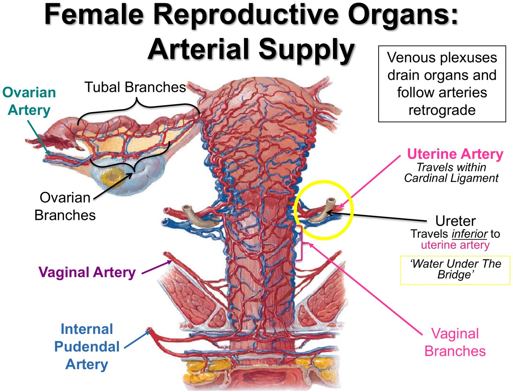
| Artery | Source | Route and targets |
|---|---|---|
| Uterine | Internal iliac | In the cardinal ligament, over the ureter. Gives vaginal branches down and ascending branches that join the ovarian artery |
| Vaginal | Uterine (usually) | Middle vagina |
| Internal pudendal | Internal iliac | Lowest vagina. Together with the uterine and vaginal arteries it forms an anastomosis around the vagina |
| Ovarian | Abdominal aorta | Retroperitoneal down to the pelvis, in the suspensory ligament. Ovarian and tubal branches join the uterine artery |
Hysterectomy: the uterine artery has to be clamped, and the ureter lies right under it. The surgeon must positively identify the ureter first so it isn't tied or cut. That is the whole point of "water under the bridge".
The ovary's supply is high. Gonads develop on the posterior abdominal wall and bring their vessels (and nerves and lymphatics) with them as they descend. That is why the ovarian artery comes off the aorta near the kidneys, and why ovarian lymph drains to nodes beside the aorta (below).
The uterus has a huge blood supply for a reason. Each cycle the endometrium is rebuilt with fresh blood and shed if there's no pregnancy. If an embryo implants, the vessels dilate and engorge to build and feed the placenta for the rest of the pregnancy.
Vessels of the Perineum
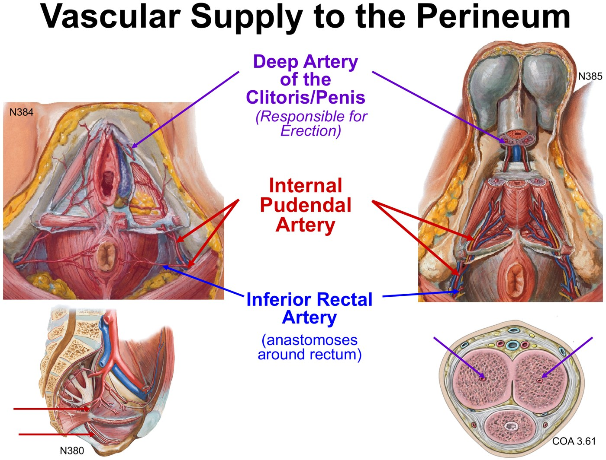
Internal pudendal artery: it enters the perineum from behind, so it runs forward through the anal triangle in the pudendal canal. Two branches to know: the inferior rectal (anus, lower rectum; joins the rectal anastomosis) and the deep artery of the clitoris/penis (erection).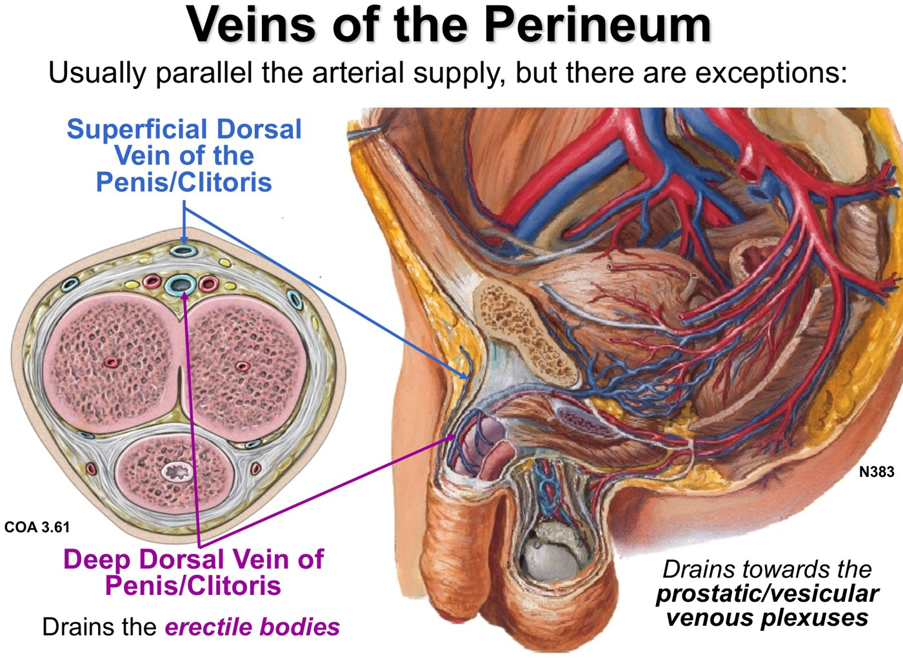
Two veins that don't follow the arteries. Superficial dorsal vein: drains the skin to the external pudendal vein (external iliac system, via the thigh). Deep dorsal vein: drains the erectile bodies to the vesical (female) or prostatic (male) plexus, then the internal iliac.The deep dorsal vein is squeezed shut during an erection. The swollen erectile bodies press it against the tight deep fascia around them (called Buck's fascia in the penis; the clitoris has the same layer). Blood can't leave until the erection ends. More in Part 7.
Lymphatic Drainage
![Slide titled Lymphatic Drainage with an illustration of the pelvic and abdominal lymph node groups and a list: superficial inguinal lymph nodes drain the skin; deep inguinal nodes drain the erectile bodies and external genitalia; external iliac nodes drain the upper vagina, cervix and inferior uterine body; internal iliac nodes drain the mid-upper vagina, cervix, uterine body and male cavernous bodies; sacral nodes drain the inferior vagina; lumbar or pre-aortic nodes drain the ovaries, uterine tubes and uterine fundus.](../../../../assets/images/week-3/female-pelvic-anatomy/lymphatics.jpg) Lymph runs back along the arteries. That is why the ovaries, tubes and fundus drain high, to the lumbar/pre-aortic nodes.
Lymph runs back along the arteries. That is why the ovaries, tubes and fundus drain high, to the lumbar/pre-aortic nodes.
| Nodes | Drain |
|---|---|
| Superficial inguinal | Skin of the perineum |
| Deep inguinal | Erectile bodies, external genitalia |
| External iliac | Upper vagina, cervix, lower uterine body |
| Internal iliac | Mid-upper vagina, cervix, uterine body (and male cavernous bodies) |
| Sacral | Lower vagina |
| Lumbar / pre-aortic | Ovaries, uterine tubes, fundus |
The chain runs superficial inguinal → deep inguinal → external iliac → common iliac → lumbar/pre-aortic → cisterna chyli → thoracic duct → back to the blood.
Where does cervical cancer spread first? Follow the blood supply. The cervix is fed by the uterine artery, a branch of the internal iliac, so it drains to the internal iliac nodes.
But the uterine artery runs out along the cardinal ligament to the lateral pelvic wall, where the external iliac nodes sit, so the cervix drains there too. In practice you check both. The general rule: nodes near a drainage path can pick up lymph even if they aren't the "textbook" group.
Nerve Supply
Autonomic nerves for the organs, the pudendal nerve for the perineum, and one line that decides where visceral pain is felt.
Sympathetic and Parasympathetic
| Sympathetic | Parasympathetic | |
|---|---|---|
| Starts at | Intermediolateral horn, T11/T12–L1/L2 (thoracolumbar only) | S2–S4 (craniosacral only) |
| Route | Through the sympathetic chain without synapsing → lumbar splanchnic nerves → synapse in prevertebral ganglia / inferior hypogastric plexus → postsynaptic fibres to the organs | Pelvic splanchnic nerves → synapse in the inferior hypogastric plexus → postsynaptic fibres to the organs |
| Effects | Uterine contraction, vasoconstriction | Uterine inhibition, vasodilation |
The inferior hypogastric plexus is mixed: both systems run through it. And in the uterus hormones call the shots, so the autonomic effects are secondary. If the autonomic basics are rusty, the lecture points you back to the Foundations nervous-system module.
The Pelvic Pain Line: Where Visceral Pain Goes
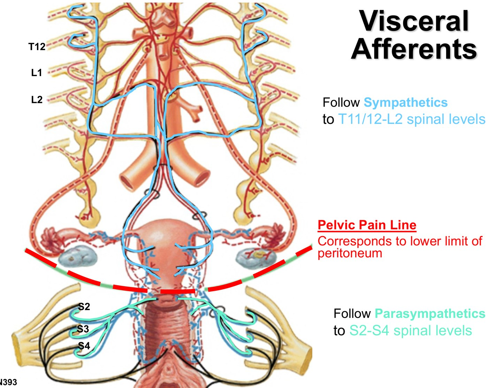
The red dashed line = the lower edge of the peritoneum. Above it, pain fibres ride back with the sympathetics. Below it, with the parasympathetics. The exact cut-off varies between people.![Slide titled Visceral Pain with an illustration of a pregnant uterus and spinal cord. The fundus (T11 to 12, L1) is above the pelvic pain line; the cervix and upper vagina (S2 to 4) are below. Visceral afferents from the uterine body and fundus accompany sympathetic fibres via hypogastric plexuses to T11, 12 (L1); visceral afferents from the cervix and upper vagina accompany pelvic splanchnic nerves (parasympathetic) to S2, 3, 4. Dermatome figures show T11 and T12 on the lower trunk and S1, S2, S3 on the buttock and posterior leg.](../../../../assets/images/week-3/female-pelvic-anatomy/visceral-pain.jpg) So a uterus hurts in two places. Fundus pain is felt over the T11–T12 dermatomes (lower trunk, flank, back). Cervix pain is felt in the S2–S4 dermatomes (buttock, perineum, back of the thigh and leg).
So a uterus hurts in two places. Fundus pain is felt over the T11–T12 dermatomes (lower trunk, flank, back). Cervix pain is felt in the S2–S4 dermatomes (buttock, perineum, back of the thigh and leg).
| Above the pelvic pain line | Below the pelvic pain line | |
|---|---|---|
| Organs | Fundus and body of the uterus, uterine tubes, ovaries | Cervix, upper vagina |
| Pain travels with | Sympathetics (via the hypogastric plexuses) | Parasympathetics (pelvic splanchnic nerves) |
| Spinal level | T11–L1/L2 | S2–S4 |
| Felt in | Lower trunk, flank, back | Buttock, perineum, back of the thigh and leg |
This is the "challenge with diagnosis" in the objectives. The brain maps visceral pain onto the skin of the same spinal level, so pelvic organ pain turns up as back pain, flank pain or leg pain, and you have to think backwards from the dermatome to the organ.
Somatic Supply: the Pudendal Nerve
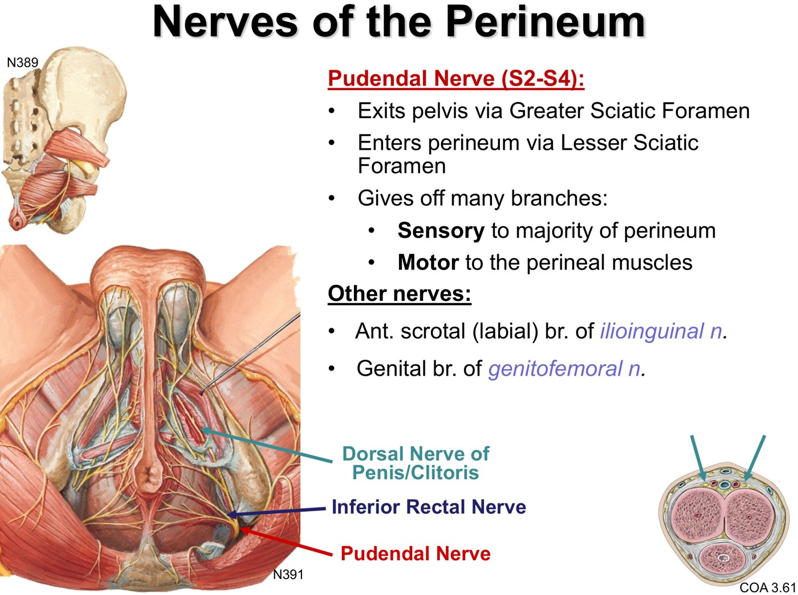
Pudendal nerve, S2–S4. Same route as the internal pudendal artery: out the greater sciatic foramen, in the lesser. Sensory to most of the perineum, motor to the perineal muscles.| Nerve | Supplies |
|---|---|
| Inferior rectal (pudendal branch) | Crosses the ischioanal fat to the external anal sphincter, anal mucosa and perianal skin |
| Dorsal nerve of the clitoris/penis (terminal pudendal branch) | The main sensory nerve of the clitoris/penis |
| Ilioinguinal (anterior labial/scrotal branches) | Front of the labia majora / scrotum |
| Genitofemoral (genital branch) | Front of the labia majora / scrotum; motor to cremaster in males |
The lowest part of the vagina and rectum and the whole perineum have somatic (normal, sharp, well-localized) sensation through the pudendal nerve. Everything above has visceral sensation, which is dull and poorly localized.
Putting the Nerves to Work: Anesthesia for Childbirth
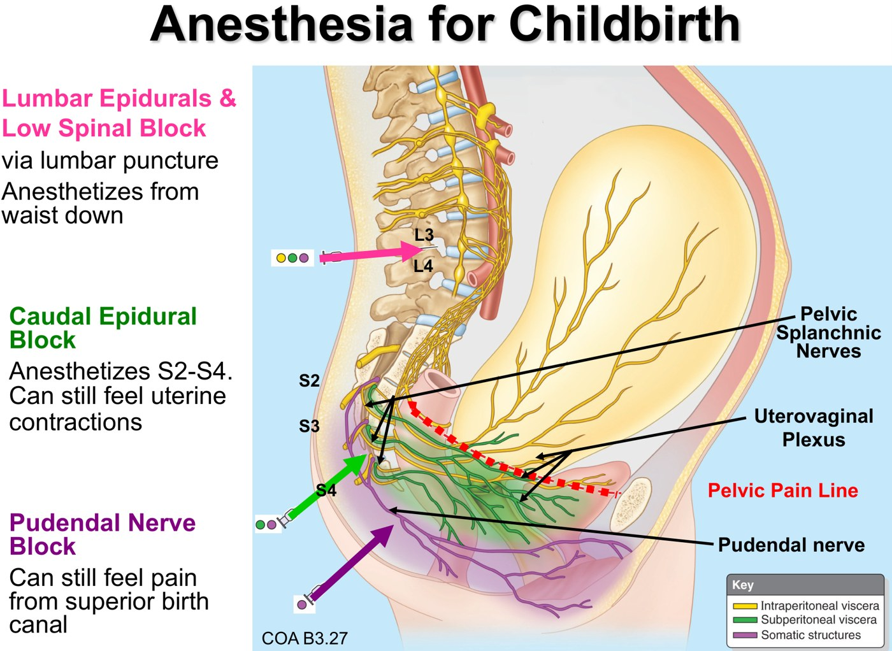
Each block works on a different set of fibres, so each numbs a different part of labour. From the lecture.| Block | Numbs | Still feels |
|---|---|---|
| Lumbar epidural / low spinal (lumbar puncture, about L3–L4) | Everything from the waist down | — |
| Caudal epidural (S2–S4) | The birth canal (everything below the pain line) | Uterine contractions (above the pain line), so she can push actively |
| Pudendal nerve block | The lowest vagina and the perineum | Contractions and the upper birth canal (cervix) |
The Perineum
The diamond below the pelvic floor: its fascial layers, its two pouches, and the erectile tissue and external genitalia that live in them.
The Diamond and Its Two Triangles
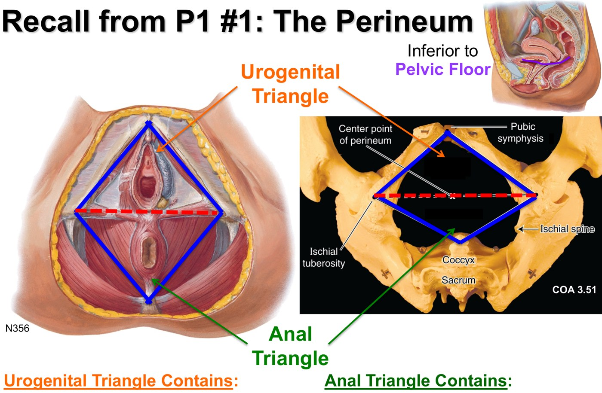
Fascial Layers and the Two Pouches
![Slide titled Recall from P1 #2/3: Fascial Planes with female and male sagittal illustrations showing Colles fascia, the superficial perineal pouch, the perineal membrane and the deep perineal pouch (urogenital diaphragm). Deep perineal pouch: external urethral and vaginal (female) sphincters, dorsal neurovascular structures of erectile tissue, bulbourethral glands (male). Superficial perineal pouch: erectile bodies and associated muscles, pudendal nerve and branches, internal pudendal vessels and branches.](../../../../assets/images/week-3/female-pelvic-anatomy/fascial-planes.jpg)
| Layer / space | What it is and what's in it |
|---|---|
| Pelvic floor | Floor of the pelvis = roof of the perineum. Has the urogenital hiatus at the front |
| Deep perineal pouch (urogenital diaphragm) | Between the pelvic floor and the perineal membrane; really a region, not a space. Urethra (and vagina) pass through. External urethral sphincter (and vaginal sphincter), deep transverse perineal muscles, dorsal neurovascular structures of the erectile tissue, bulbourethral glands (males) |
| Perineal membrane | Closes the urogenital hiatus from below. Only in the urogenital triangle; merges with the perineal body at the back |
| Superficial perineal pouch | Between the perineal membrane and Colles' fascia. Erectile bodies and their muscles, pudendal nerve branches, internal pudendal vessel branches, greater vestibular glands (females). In males it includes the scrotum and penis |
| Colles' fascia | Continuous with Scarpa's fascia of the abdominal wall in front (and dartos in the scrotum). Does not extend into the thighs or back into the anal triangle |
A 17-year-old with a straddle injury (swelling in the groin): the spongy urethra tears, below the perineal membrane. Urine and blood fill the superficial pouch. Colles' fascia is fused to the thighs and to the back of the membrane, and continuous with Scarpa's fascia in front, so the fluid spreads into the scrotum and penis and up the anterior abdominal wall, but never into the thighs or the anal triangle.
A 26-year-old after a car crash with a pelvic fracture and free fluid on the FAST scan: the membranous urethra tears as it passes through the perineal membrane. Fluid fills the deep pouch. Its roof, the pelvic floor, has a hole in it (the urogenital hiatus), so fluid rises up into the pelvic cavity. This stays under the peritoneum, not inside the peritoneal cavity.
The same anatomy is why catheterizing, especially a male urethra with its bends, has to be done gently.
Erectile Tissue: Male vs Female
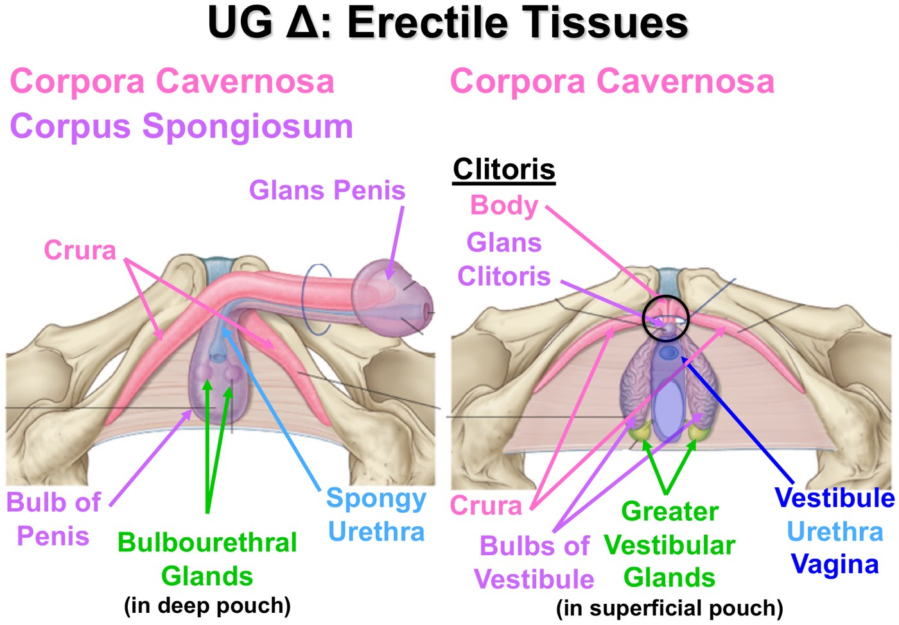
Same parts, different layout. In the female, the corpus spongiosum homologue is split into the bulbs of the vestibule and the glans clitoris, with only thin bands between them.| Male | Female |
|---|---|
| Corpora cavernosa (crura on the ischiopubic rami) | Corpora cavernosa: crura on the ischiopubic rami and perineal membrane, joining to form the body of the clitoris (the only erectile tissue in the body) |
| Bulb of the penis | Bulbs of the vestibule, one on each side of the vestibule |
| Corpus spongiosum → glans penis, around the urethra | Glans clitoris, joined to the bulbs by thin bands (not part of the body) |
| Bulbourethral glands (deep pouch) | Greater vestibular glands (superficial pouch): mucus into the vestibule during arousal |
| Penis: sexual and urinary | Clitoris: sexual arousal only |
The superficial perineal muscles
![Slide titled UG triangle: Superficial Perineal Muscles with illustrations of male and female perineal muscles. Ischiocavernosus: maintains erection, forces blood into erectile tissues, compresses venous outflow. Bulbospongiosus: assists erection; in males expels last drops of urine and semen; in females supports the perineal body and pelvic floor, acts as a vaginal sphincter and compresses the greater vestibular glands. Superficial transverse perineal muscles support and fix the perineal body and pelvic floor and support abdominopelvic viscera. Innervation: pudendal nerve (S2 to 4).](../../../../assets/images/week-3/female-pelvic-anatomy/perineal-muscles.jpg) All three are supplied by the pudendal nerve (S2–S4).
All three are supplied by the pudendal nerve (S2–S4).
| Muscle | Lies over | Does |
|---|---|---|
| Ischiocavernosus | The crura | Maintains erection: pushes blood into the erectile tissue and compresses venous outflow |
| Bulbospongiosus | Bulb of the penis / bulbs of the vestibule | Helps erection. Males: expels the last urine and semen. Females: vaginal sphincter, squeezes the greater vestibular glands |
| Superficial transverse perineal | Ischial tuberosity → perineal body | Support: fixes the perineal body and pelvic floor |
The perineal body is the fibromuscular knot in the middle of the perineum where almost everything meets: bulbospongiosus, superficial transverse perineal, the external anal sphincter, the perineal membrane, Colles' fascia and the pelvic floor. It is the central support of the perineum.
The Vulva and Vestibule
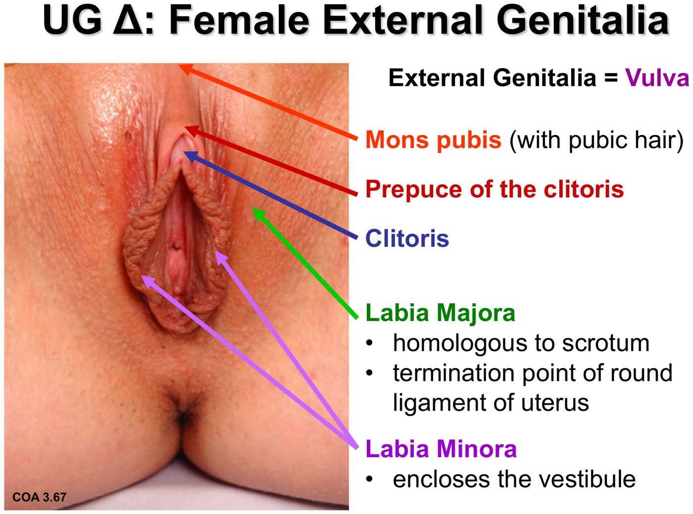
The vulva (its correct name): mons pubis, labia majora, labia minora, clitoris with its prepuce (hood).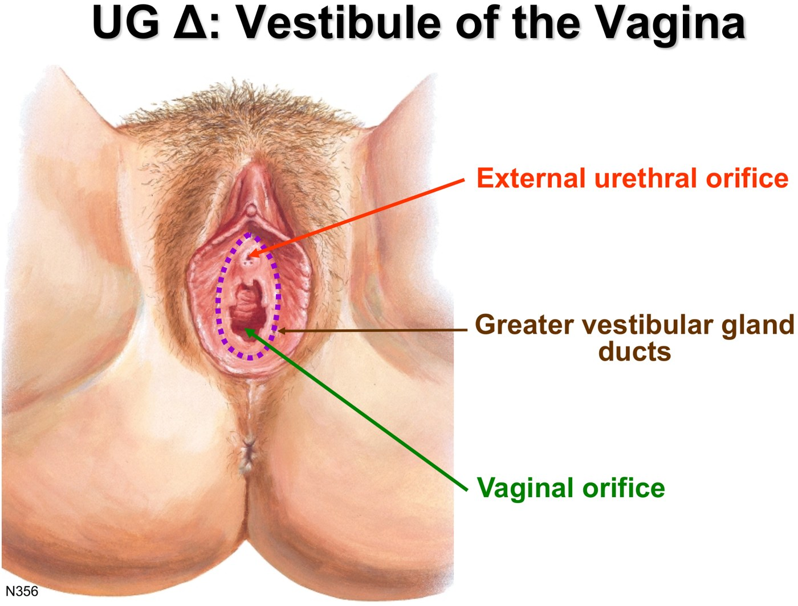
Inside the vestibule: external urethral orifice (about 2 cm below and behind the glans clitoris), vaginal orifice, and the ducts of the greater vestibular glands.| Part | Note |
|---|---|
| Mons pubis | Fatty mound over the pubic symphysis, with pubic hair |
| Labia majora | Homologue of the scrotum; where the round ligament ends |
| Labia minora | Fat-free, hairless folds that enclose the vestibule |
| Clitoris | Where the labia minora meet in front; covered by the prepuce |
The external urethral orifice is small and tightly closed. The catheter tip tends to slip into the larger vaginal opening just behind it. If that happens, the catheter is contaminated with vaginal flora and is no longer sterile. Throw it out and open a fresh one; pushing a dirty catheter into the bladder invites a UTI.
Male review, briefly: penis = root, body, corona and glans; its dorsal surface faces forward when flaccid. The scrotum is a fibromuscular skin sac for the testes. Its dartos muscle wrinkles the skin (thicker skin, less surface area) and works with cremaster (which lifts the testes) to keep them at the right temperature. The raphe down the middle is the seam where the folds fused in development. The membranous urethra is only about 1 cm long, as it crosses the urogenital membrane.
The Anal Triangle
Fat, a canal full of nerves and vessels, and the venous plexus that gives you hemorrhoids.
The Ischioanal Fossa
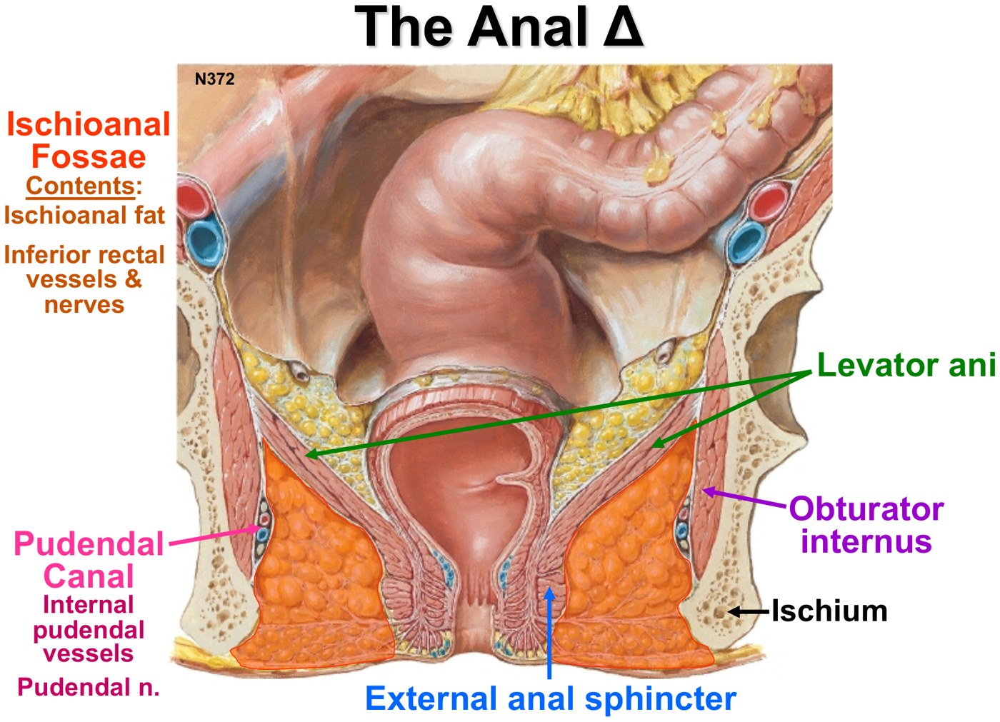
Wedge-shaped fat pads on each side of the anal canal. Roof: levator ani. Side: obturator internus and ischium. Middle: external anal sphincter. Contents: fat plus the inferior rectal vessels and nerves.- Pudendal (Alcock's) canal: a tunnel inside the obturator internus fascia, on the side wall of the fossa. It carries the internal pudendal vessels and the pudendal nerve, which give off the inferior rectal branches as they pass.
- Ischioanal fat is among the last fat to go in starvation. Without it the rectum loses support, so rectal prolapse is relatively common in starvation.
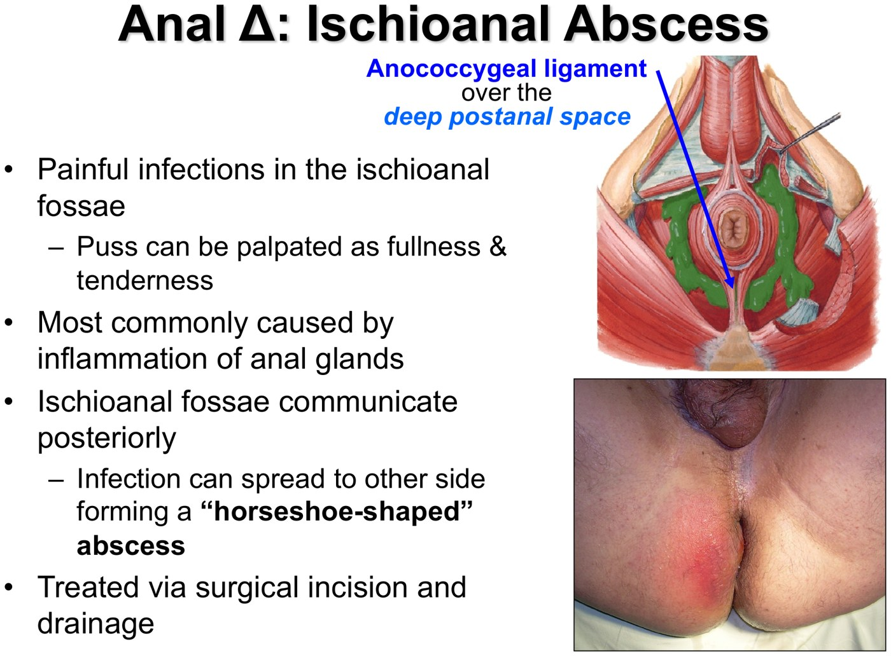
Rectal Vessels and Hemorrhoids
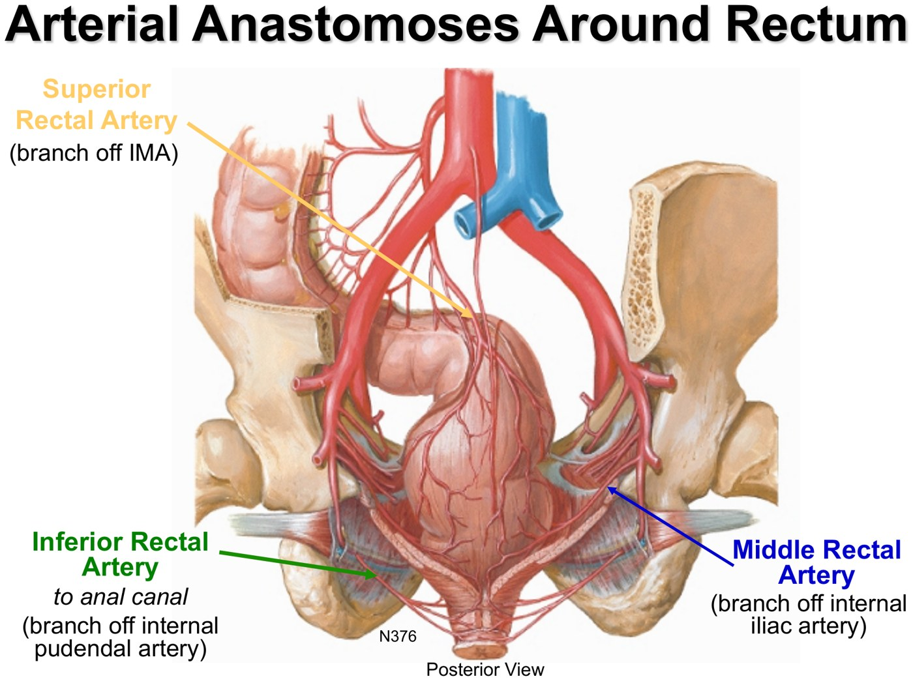
Three arteries, one anastomosis: superior rectal (IMA), middle rectal (internal iliac), inferior rectal (internal pudendal).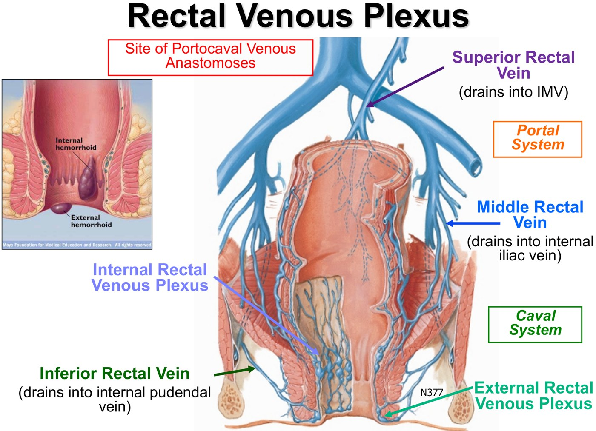
The veins join two systems. Superior rectal → IMV → portal. Middle and inferior rectal → internal iliac → caval. That makes the rectum a portocaval anastomosis.Hemorrhoids are varicose veins of this valveless plexus. Anything that raises the pressure in it can cause them: portal hypertension, IVC obstruction, or anything raising pelvic venous pressure, such as pregnancy (the big uterus presses on the veins).
| Above the pectinate line | Below the pectinate line | |
|---|---|---|
| Part of the canal | Upper 2/3 | Lower 1/3 |
| Embryology | Hindgut endoderm | Proctodeum ectoderm |
| Nerves | Autonomic (pelvic plexus) | Somatic (pudendal / inferior rectal nerve) |
| Venous plexus | Internal rectal plexus | External rectal plexus |
| Hemorrhoids | Internal: painless but bleed (blood on the toilet paper) | External: painful, itchy, and bleed |
Functional Sexual Anatomy
How the nerves, vessels and erectile tissue work together.
Arousal and Erection
| Mechanism | Triggered by | Pathway |
|---|---|---|
| Psychogenic | Sounds, sights, smells, imagination | Brain → sacral cord → pelvic splanchnic (parasympathetic) nerves. A sympathetic contribution is possible but unproven |
| Reflexogenic | Touch | Sensory fibres → sacral cord → parasympathetic output (a spinal reflex) |
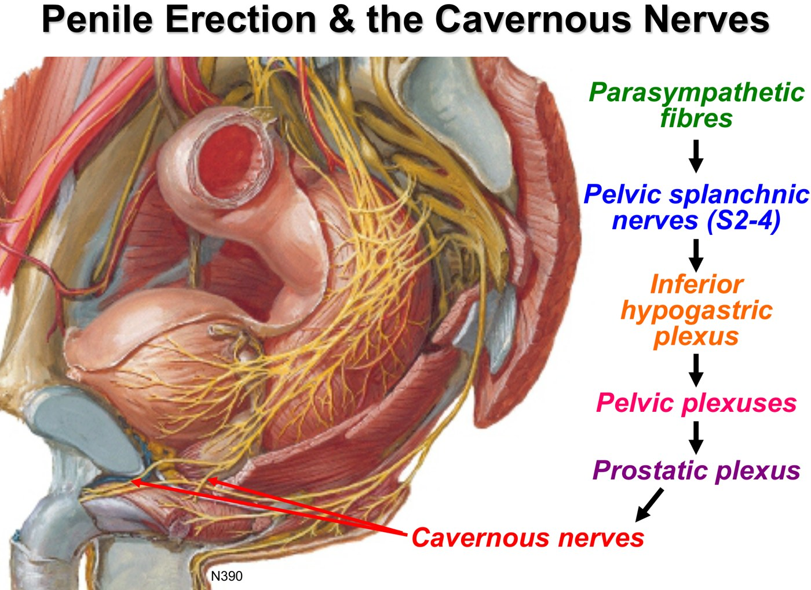
The erection pathway: S2–S4 → pelvic splanchnic nerves → inferior hypogastric plexus → pelvic plexus → prostatic plexus → cavernous nerves → through the perineal membrane to the erectile tissue.![Slide titled Hydraulics of Erection. Parasympathetic nerve stimulation (point): uncoiling and vasodilatation of helicine arteries (branches off the internal pudendal artery); engorgement of erectile tissues (erection); veins draining blood become compressed. Ejaculation: sympathetically mediated event causing coordinated contractions of the reproductive tract (shoot). Detumescence: loss of erection due to a lack of parasympathetic input. Limited data available regarding the female anatomy, physiology, biochemistry and molecular biology of the female sexual response.](../../../../assets/images/week-3/female-pelvic-anatomy/erection-hydraulics.jpg) "Point and shoot." Parasympathetic = Point (erection). Sympathetic = Shoot (ejaculation). Losing the parasympathetic input ends the erection (detumescence).
"Point and shoot." Parasympathetic = Point (erection). Sympathetic = Shoot (ejaculation). Losing the parasympathetic input ends the erection (detumescence).
- Parasympathetic signal → the helicine arteries (end branches of the deep artery, from the internal pudendal) uncoil and dilate.
- Blood pours in and the erectile tissue engorges.
- The swollen bodies press the deep dorsal vein against the tight deep (Buck's) fascia, so blood can't get out.
- Ejaculation (or orgasm) is a sympathetic event: coordinated contraction of the reproductive tract.
- Detumescence: the parasympathetic drive stops, the arteries constrict again, and blood drains out through the veins.
The lecture uses the male system because much less is known about the anatomy, physiology and biology of the female sexual response; there are real gaps in the research.
Erectile dysfunction
| Cause | Treatment |
|---|---|
| CNS or endocrine disorders, including low testosterone | Treat the cause |
| Nerves fail to stimulate the tissue, or vessels don't dilate | Oral medication that increases blood flow to the erectile tissue (the slide shows Cialis and Viagra) |
| Lesion of the prostatic plexus or cavernous nerves | Pills can't work without the nerve signal, so surgical options: penile pump, or semi-rigid or inflatable prosthesis |
The cavernous nerves run through the prostatic plexus on the surface of the prostate. Taking the prostate out for cancer very often damages them. With the parasympathetic signal cut, the arteries never get the "dilate" message, so loss of erection is a frequent result of radical prostatectomy.
The sexual response cycle
| Stage | What happens |
|---|---|
| 1. Desire | Wanting to take part, from outside or inside stimuli |
| 2. Arousal | Central (thoughts, fantasies) · non-genital peripheral (salivation, sweating, skin vasodilation, nipple erection) · genital (clitoral, labial and vaginal engorgement; penile erection) |
| 3. Orgasm | An altered state of consciousness; male ejaculation |
| 4. Resolution | Return to baseline; the cycle can start again |
There are several models of this cycle. The lecture's point is not the model itself but which anatomy and which nerves are active at each stage.
Putting It Together: RLQ Pain in a 20-Year-Old Woman
The workshop's second objective. Use this lecture's anatomy to build the list: what lives in the right lower quadrant, and how would its pain present?
| Structure | What can go wrong (from this lecture) | How the pain behaves |
|---|---|---|
| Right uterine tube | Ectopic (tubal) pregnancy; can bleed into the pouch of Douglas | Above the pain line: visceral pain via sympathetics (T11–L1), lower abdomen/flank. Always check a pregnancy test |
| Right ovary | Cyst (palpable on bimanual exam only when abnormal), ovulation | Above the pain line: T11–L1. Ovarian lymph and vessels run up to the aorta |
| Right ureter | A stone; injury in pelvic surgery | Runs under the uterine artery and beside the uterosacral ligament |
| Appendix, cecum, terminal ileum | Appendicitis, bowel disease | Gut visceral pain; RLQ once the overlying peritoneum is irritated |
Free fluid or blood from any of these collects in the rectouterine pouch, the lowest point of the peritoneal cavity, which is why it shows up there on ultrasound. This section is built from the lecture's anatomy to cover the stated objective; the recorded material doesn't walk through the case itself.
Built from Dr. Charys Martin's "Anatomy of the Assigned Female Pelvis & Perineum & Sexual Function" workshop: the AnatomyPelvisSlides2021 deck and the recorded lectures, lab demonstrations and knowledge-check walk-throughs. All figures are slides from the deck, which uses Netter, Clinically Oriented Anatomy and Thieme illustrations (codes such as N352 and COA 3.61 on each slide). Photographs of patients are kept only where the deck uses them clinically (the cervix, laparoscopy, ultrasound, the abscess). Knowledge-check slides are left out, but the facts they test are all in the notes: the organ functions, the laparoscopic structures, the pouches, the pelvic arteries, cervical cancer node spread, the fascial-plane injuries and the hemorrhoid pain question. The lecture's own words are followed where the recording and slides differ in detail. Two things are added: the reason radical prostatectomy causes ED is spelled out from the lecture's own nerve pathway, and the RLQ section at the end applies the lecture's anatomy to the workshop's stated case objective. The embryology behind the ligaments and blood supply is in 3.7.